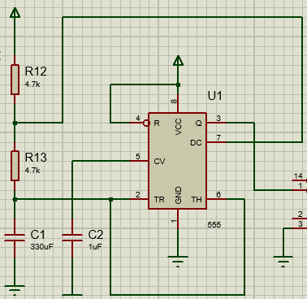
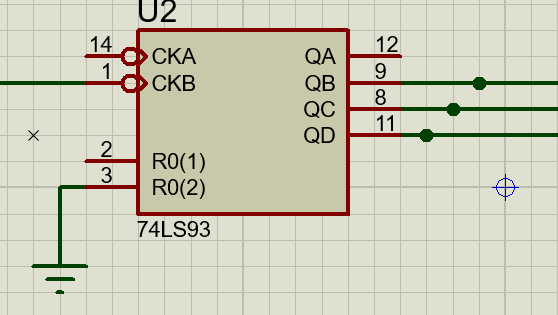
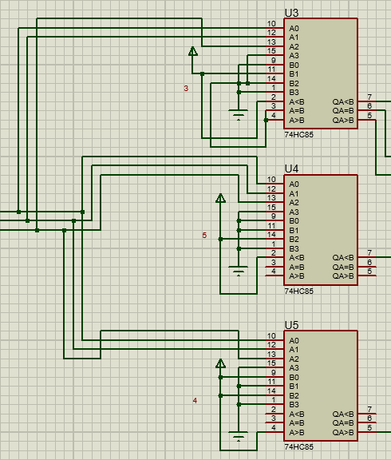
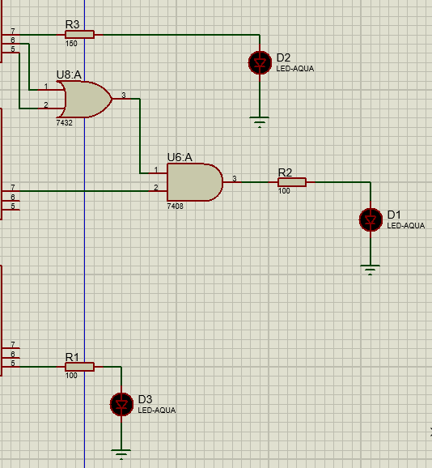

El 555 en modo astable genera una señal cuadrada, como se establecio cierto tiempo para cada color, se debe de calcular la frecuencia con el fin de que 9 pulsos dure el ciclo del semaforo.
El CI 74LS93 recibe los pulsos del 555 y genera numeros binario con el flanco ascendente
Los 3 CI 74HC85 recibe los numeros binarios del contador binario, y a cada uno se le dio un numero binario, con el fin de que cada color dure cierta cantidad de tiempo por ejemplo si el color rojo dura 3s y cada ciclo dura un 1s el numero a comparar seria 3
Solo se debe de prender un color a la vez, con logica combinacionales se establecio las condicionales
